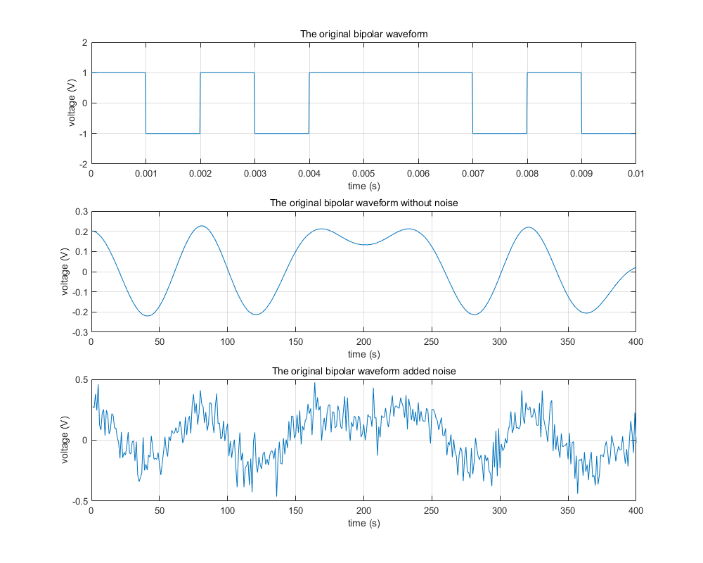
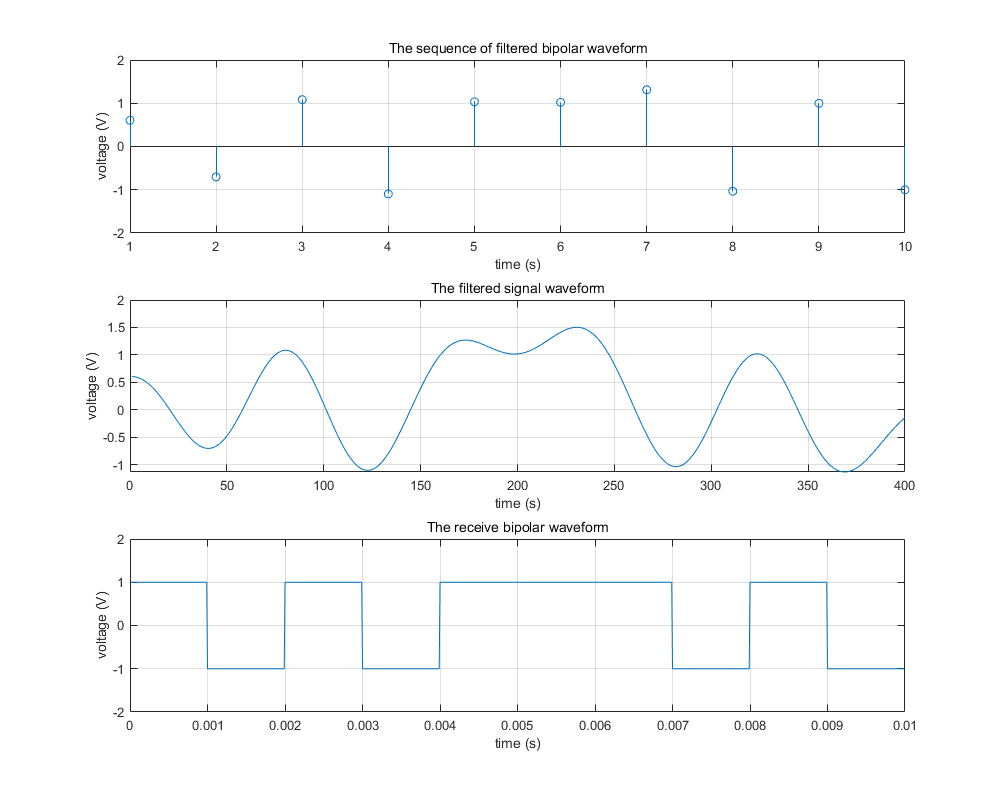

clear;
clc;
L = 10;
bits = round(rand(1,L));
bits(bits==0) = -1;
Tb = 0.001;
N_sample = 100;
dt = Tb / N_sample;
t = 0:dt:(L * N_sample - 1)*dt;
bipolar_wave = [];
for i=1:L
if bits(i) == 1
bipolar_wave = [bipolar_wave, ones(1, N_sample)];
else
bipolar_wave = [bipolar_wave, -ones(1, N_sample)];
end
end
Fs = 1e5;
Rs = 0.25e4;
span = 6;
alpha = 0.5;
sps = Fs/Rs;
h = rcosdesign(alpha, span, sps);
bits_sample = upsample(bits,sps);
rs1 = conv(bits_sample, h, 'same');
figure(1)
set(gcf,'position', [250 200 1000 800]);
subplot(311)
plot(t, bipolar_wave)
ylim([-2, 2])
grid on;
title("The original bipolar waveform");
xlabel("time (s)")
ylabel("voltage (V)")
subplot(312)
plot((1:length(rs1)), rs1)
grid on;
title("The original bipolar waveform without noise");
xlabel("time (s)")
ylabel("voltage (V)")
noise_intense = 0.1;
rs1_noise = rs1 + randn(1, length(rs1))*noise_intense;
subplot(313)
plot((1:length(rs1_noise)), rs1_noise)
grid on;
title("The original bipolar waveform added noise");
xlabel("time (s)")
ylabel("voltage (V)")
rs1_noise_match = conv(rs1_noise, h, 'same');
rs1_noise_match_sample = downsample(rs1_noise_match, sps);
figure(2)
set(gcf,'position', [250 200 1000 800]);
subplot(311)
stem(rs1_noise_match_sample)
ylim([-2, 2])
grid on;
title("The sequence of filtered bipolar waveform");
xlabel("time (s)")
ylabel("voltage (V)")
subplot(312)
plot((1:length(rs1_noise_match)), rs1_noise_match)
grid on;
title("The filtered signal waveform");
xlabel("time (s)")
ylabel("voltage (V)")
output_wave = [];
Vd = 0;
for i=1:length(rs1_noise_match_sample)
if rs1_noise_match_sample(i) >= Vd
output_wave = [output_wave, ones(1, N_sample)];
else
output_wave = [output_wave, -ones(1, N_sample)];
end
end
subplot(313)
plot(t,output_wave)
ylim([-2, 2])
grid on;
title("The receive bipolar waveform");
xlabel("time (s)")
ylabel("voltage (V)")
 